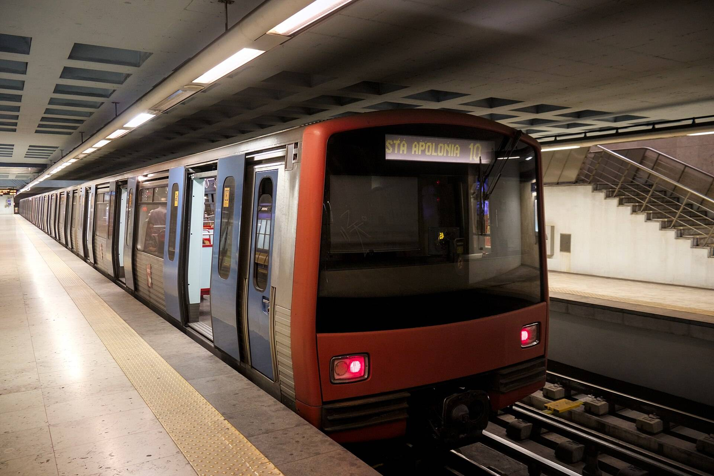

两条线，双向都看。
选一个换乘站：经过的每一班车，精确到分钟。
| 线路 | 开往 | 下一班 | 再下一班 | 状态 |
|---|---|---|---|---|
| 绿线 | Cais do Sodré | 1 分钟 | 6 分钟 | 准点 |
| 绿线 | Telheiras | 3 分钟 | 9 分钟 | 准点 |
| 红线 | Aeroporto | 2 分钟 | 8 分钟 | 准点 |
| 红线 | São Sebastião | 5 分钟 | 14 分钟 | 晚点 4 分钟 |
App 内实时 本页为示例时间。
下车直奔楼梯。
出口屏会指明停得离你要出的口最近的那节车厢。
- 前要上的车厢
- 左乘扶梯上行
- Chiado出站上街
Baixa-Chiado 的示例路线。
进闸之前，晚点先知道。
每条线的状态，进闸前一目了然。
- 蓝线Reboleira 至 Santa Apolónia晚点 3 分钟
- 黄线Odivelas 至 Rato准点
- 绿线Telheiras 至 Cais do Sodré准点
- 红线São Sebastião 至 Aeroporto准点
每一站，都免费。
每条线，从街面到站台，来回都覆盖。